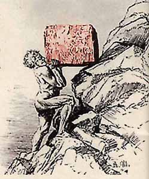

|
Klasik Ürün Projelendirme Süreci (2)
En sonunda istenilen sonuçlara ulaþýldýðýnda ise elde edilen nihai dizayn bu defa üretim mühendislerinin ya da sorumlularýnýn masasýna gelmekte ve zamana karþý son bir savaþ da bu aþamada verilmeye baþlanmaktadýr. Tüm bu süreci gözden geçirmeye çalýþtýðýmýzda ise tam bir kaos eþliðinde bitmek bilmeyen toplantýlar ve çöpe giden birçok fikir ile buna baðlý zaman, daha çalýþacaðýndan bile emin olunamayan parçalarýn üretimi için malzeme ve iþçilik giderleri göze çarpabilir.
Bir de üstüne üstlük uzun vadede pazar payýmýzý düþürmemek ve tercihen arttýrmak istiyorsak, tüm bu iþler hiç bitmek bilmeyen mitolojideki Sisifus'un (Sysiphos) hikayesine dönebilir (3). Sisifus'a verilen ceza, bir taþý daðýn eteklerinden yukarýya kadar taþýmasýdýr. Ancak taþ o kadar aðýrdýr ki Sisifus doruða her yaklaþtýðýnda enerjisi tükenmektedir ve kan ter içindeyken kayanýn aðýrlýðýný taþýyamaz hale gelir ve aþaðýya yuvarlanan kayanýn önünden kendini zor atar. Sonra da aþaðýya inerek sabýrla kayayý tekrar yukarý taþýmaya baþlar. Ýþte sanayicimizin yapmasý gereken de maalesef bu hiç bitmeyecek olan iþi kabul edip geliþimde sürekliliði saðlamak için çalýþmak ve daha da çok çalýþmaktýr.
Örnek olarak, geçmiþte piyasaya çýkan dijital kaset çalarlara baktýðýmýzda, tam bu ürünün satýþýndan para kazanýlmaya baþlandýðý zaman CD çalarlarýn piyasaya çýktýðýný görebiliriz. Baþka bir deyiþle uzun vadede piyasada tutunmak isteyen firmalarýn yenilikleri takip edip çok kýsa süreler içinde bu yeni teknolojilere stratejileri doðrultusunda adaptasyonu saðlamalarý kaçýnýlmaz olmaktadýr ve bu da klasik ürün geliþtirme sürecinin sancýlarýnýn her yeni deðiþimle birlikte süreklilik arz edeceði anlamýna gelmektedir.
Geliþimde süreklilik, "Product life cycle" (4)
Peki ne yapmalýyýz? Maliyetlerimizi kýsmak ve kaliteden ödün vermeden daha kýsa bir zaman içinde daha iyi ürünlere nasýl ulaþabiliriz?
Ýþte bu noktada bilgisayar destekli ileri mühendislik teknolojileri devreye sokmamýz bizlere rakiplerimize karþý büyük avantajlar saðlayabilir. Baþka bir deyiþle, ürettiðimiz mamul ne olursa olsun, gerek üretim sürecini, gerekse nihai ürünün testini sanal ortama taþýmamýz sadece iþçilik zamaný ve masraflarýnýn kýsýlmasýnda deðil, ayný zamanda deneme yanýlma sürecinin bilgisayar ortamýnda olmasý sayesinde daha iyi ve daha hafif, dolayýsý ile daha problemsiz ve daha ucuz ürünlere ulaþmamýzda önemli bir rol oynamaktadýr.
Bu kapsamda sanal prototiplerin oluþturulmasý ve daha konsept aþamasýnda olan ürün dizaynlarýnýn (çözüm önerilerinin) hemen bir analize sokulmasýna ve akabinde analiz neticelerinin katý modellemede optimizasyon çalýþmalarýnda kullanýlarak tüm bu sürecin bir bütün halinde devam ettirilmesi büyük bir önem ihtiva etmektedir. Bu entegre sürece ayný zamanda "Front End" ürün geliþtirme süreci de denilmektedir ve buradaki amacýmýz daha üretilebilirlik sorularýna gelmeden, yani henüz prototip üretimi için gerekli çalýþmalar yapýlmadan, yani gerekli teknik resimler oluþturulmadan, katý modelin çalýþma þartlarý altýnda ne tür deformasyonlara uðrayacaðýnýn, baþka bir deyiþle yapýnýn çevresel etkilere cevabýnýn ne olacaðýnýn ön görülmesi olarak özetlenebilir.
"Front End" Ürün Geliþtirme Süreci (5)
|